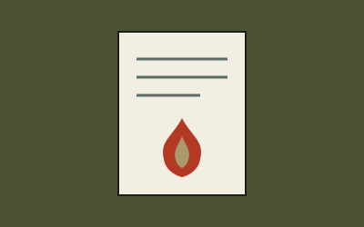

CDS 2026: Exam Pattern & Strategy Breakdown
A sector-by-sector look at the revised CDS paper with a week-by-week prep plan for English, GK and Maths.
Read dispatch →Archive
Filter by sector to find what you need — exam strategy, service life, or current affairs for your GK prep.
A sector-by-sector look at the revised CDS paper with a week-by-week prep plan for English, GK and Maths.
Read dispatch →
0500 hours to lights-out — an hour-by-hour account of daily routine at the National Defence Academy.
Read dispatch →
Tri-services contingents and this year's tableaux — what to watch for and why it matters for GK.
Read dispatch →
How fixed-wing and rotary operations are coordinated on a modern Indian Navy carrier deck.
Read dispatch →
Eligibility, tenure, and the retention pathway explained plainly — with common myths cleared up.
Read dispatch →How extreme altitude reshaped equipment, logistics, and training doctrine over four decades.
Read dispatch →